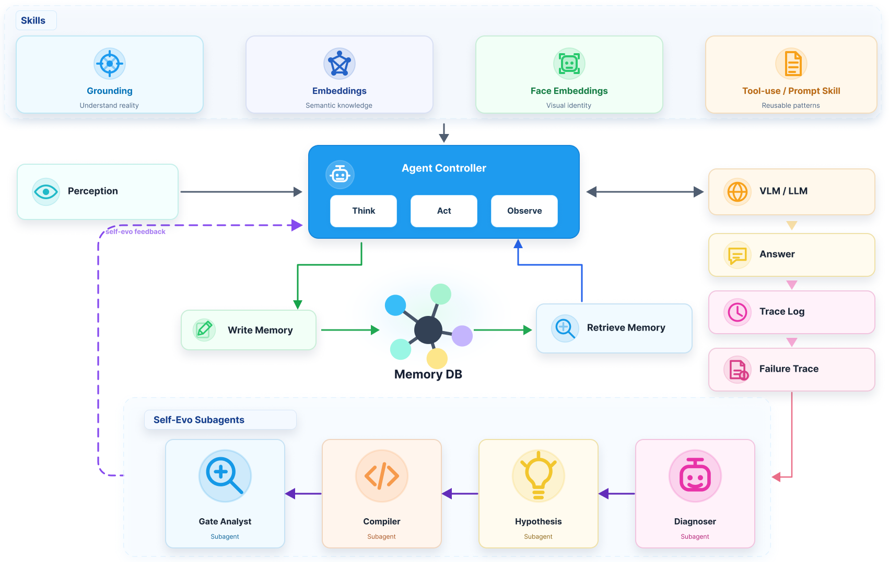

제출: 2026년 7월 11일 (v1) · 백본 DeepSeek-V4-Pro / Qwen3.6-Plus · EmbodiedWorldBench 자체 구축
한 줄 요약 (TL;DR)
단일 컨트롤러형 로봇 에이전트를 대체하는 3계층 Agent OS(Agent Harness · Skills&Tools · Memory) + edge-cloud 이중 LLM + 실패 기반 자기진화 루프. 대화·시각·공간·시간 정보를 하나의 타입 지정 다중모달 그래프로 관리하며 프라이버시 게이팅(>99% 정확)으로 edge/cloud 메모리를 분리 저장. 자체 EmbodiedWorldBench에서 단일 컨트롤러 대비 TSR +12%, GCR +10.8%(DeepSeek-V4-Pro 사용 시 TSR 68.18 / GCR 74.62), LoCoMo 87.5→88.7, OpenEQA 59.9→60.4, Mem-Gallery 88.6→89.0.
1배경 · 문제의식
기존 로봇 LLM 에이전트는 (1) 단일 LLM이 계획·기술 실행·검증을 다 감당해 컨텍스트가 오염되고, (2) 시각·공간·시간·정체성 등 이질 정보를 한 메모리로 통합하기 어렵고, (3) 실패로부터 자기 개선(self-evolution)이 어렵고, (4) 온보드 저지연 요구와 대형 모델 추론이 충돌한다. ABot은 이를 OS 관점으로 재정리한다: 계획·기술·검증을 각기 다른 컨텍스트로 분리하고, 메모리는 유형 그래프로 표준화하며, 실패 로그를 게이팅된 assets로 승화시키는 evo 루프를 두고, edge-cloud 이중 LLM으로 지연·프라이버시를 함께 관리한다.
메인 LLM이 현재 장면을 조건으로 계획(planning)을 수행하고, 절차형 서브태스크는 Skill Runner가 격리된 로컬 컨텍스트에서 실행. Verifier는 runtime·skill-level·finish-time 세 단계에서 감독하며 실패 시 메인 LLM으로 피드백해 reasoning-execution-verification 루프를 형성.
Memory Graph 스키마
노드는 source container(원본 컨테이너), evidence unit(근거 조각), entity(개체), place(장소), session(세션), semantic event(의미 이벤트). 엣지는 시간·의미·공간·정체성·근거 관계를 인코딩. 온라인 경로는 관측/상호작용 → source-grounded 메모리 그래프 → 태스크 관련 근거 검색; 오프라인 경로는 실패 trace → 진단 → evo-asset 생성.
Split-wise Self-Evolution 프로토콜
gt 누출 방지 규약: split 𝒟ₜ에서 이전 assets A<t만 써서 추론 → 실패 진단 → 수정안 제안 → gated JSON DSL로 evo-asset 컴파일 → 개선 ≥ τ_gain, 회귀 ≤ τ_reg인 경우만 승인 → 승인된 asset만 다음 split 𝒟ₜ₊₁, …에 propagate. 이는 자기평가로 스스로를 튜닝하는 것이 아니라, 별도 split에서 지연 검증된 asset만 채택하는 안전 규약이다.
Edge-Cloud 이중 LLM
Edge
Tiny LLM · 저지연 routine 처리 · 사적 메모리 (개인 정보)
Cloud
Large LLM · 복잡 추론 · 공유 지식 저장
프라이버시 게이팅
공유 가능 항목 vs 민감 항목 분류 정확도 >99%
동기화
공유 가능 항목만 cloud에 반영, 사적 항목은 edge에만 유지
학습 파이프라인 (그림 6)
텍스트 기반 환경 구성 → teacher trajectory distillation → SFT → LLM-as-a-Judge 보상과 GiGPO advantage를 사용하는 online RL로 마무리.
4실험 결과
EmbodiedWorldBench — 에이전트 평가 (표 1)
에이전트
모델
TSR (%)
GCR (%)
ReAct Baseline (단일 컨트롤러)
Qwen3.6-Plus
49.97
57.95
ABot-AgentOS
Qwen3.6-Plus
61.96
68.79
ABot-AgentOS
DeepSeek-V4-Pro
68.18
74.62
같은 백본에서 hierarchical harness가 단일 컨트롤러 대비 TSR +12pt, GCR +10.8pt. 아키텍처 이득이 모델 크기와 독립.
메모리 벤치 (자기진화 유무)
벤치
Static
Self-evolved
LoCoMo
87.5
88.7
OpenEQA (EM-EQA)
59.9
60.4
Mem-Gallery
88.6
89.0
NExT-QA (Acc@All, static)
76.5
자기진화 루프가 세 벤치 모두에서 소폭이지만 일관된 개선. 큰 튜닝 없이도 실패 로그만으로 개선이 축적됨.
Privacy Gating
공유 가능 vs 민감 항목 이진 분류 정확도 >99%. Edge-only 유지가 필요한 사적 정보를 클라우드로 잘못 승격시키는 사고를 실질적으로 억제.
5Ablation (주요 발견)
단일 컨트롤러 → 계층형 harness: 같은 백본(Qwen3.6-Plus)에서 TSR 49.97→61.96, GCR 57.95→68.79. 모델 크기가 아니라 컨텍스트 분리 + 검증 자체가 이득의 원천임을 보임.
Static memory → Self-evolved memory: LoCoMo +1.2, OpenEQA +0.5, Mem-Gallery +0.4. 승인 게이팅이 개선을 안전하게 축적함을 시사.
Failure-to-evolution 사례: 시각 identity QA에서 견종 단서 누락, 시간 텍스트 QA에서 정규화 오류가 정확히 지목되고 assets로 승화(그림 4).
Compound task 난이도: 네비 + NPC 상호작용 + 인지가 겹치는 4단계 난이도 구간에서 harness 이득이 특히 큼.
6핵심 Figure / Table

Figure 1 — 시스템 아키텍처. Edge Tiny LLM + Cloud Large LLM의 이중 코어, verification-aware ReAct를 갖춘 Agent Harness, 확장 가능한 skill library, 그리고 edge 사적 메모리와 cloud 메모리를 동기화하는 계층형 메모리. (출처: arXiv:2607.10350)